Indice
Kindergarten es un juego de puzles y aventuras centrado en la asistencia diaria de un estudiante a la escuela, cuyo ambiente resulta sutil pero constantemente inquietante. El profesorado muestra comportamientos peculiares, los alumnos son impredecibles y la secuencia de eventos rara vez se mantiene constante. Bajo su estética infantil y vibrante, el juego oculta una serie de misterios inusuales, situaciones de alto riesgo y sucesos con un humor negro que se desvelan a través de las decisiones y la exploración del jugador. Cada interacción es importante, y determinar la secuencia óptima de acciones es esencial para descubrir la verdad tras la naturaleza extraordinaria de la escuela.
Los controles son los siguientes:
Movimiento: W (arriba), A (izquierda), S (abajo), D (derecha)
interacciones: clik del mouse
esperar:esto te permite gastar un punto de accion sin hacer nada
Esc: abrir el menu de pausa
El juego Kindergarten fue creado por Connor Boyle y Sean Young, dos desarrolladores independientes que operan bajo el nombre de SmashGames. Su objetivo de desarrollo era ofrecer una experiencia interactiva única, combinando elementos de humor negro, juegos de aventura y resolución de puzles, todo ello ambientado en un peculiar jardín de infancia caracterizado por sus misterios y situaciones absurdas.
La historia de Kindergarten se presenta a través de tres juegos independientes, cada uno correspondiente a un día diferente de la jornada escolar. La primera entrega transcurre el lunes, que parece ser un día de muchos retos y repetición.
este dia se divide en 6 partes
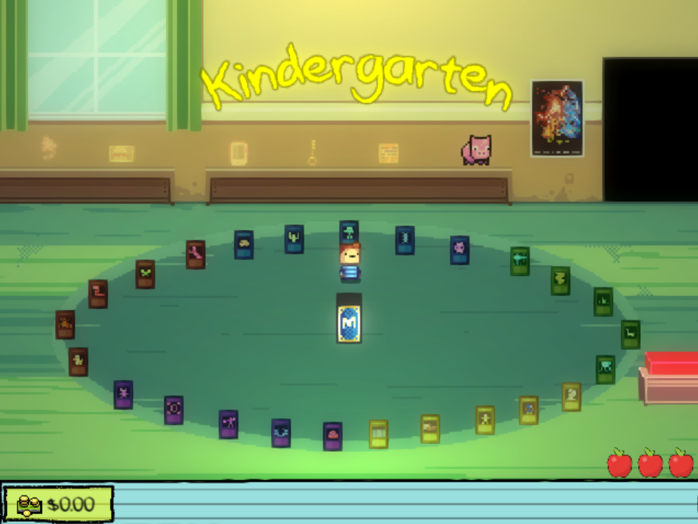
La habitacion del Jugador es la etapa preparatoria donde el jugador decide qué objeto clave llevar al colegio para los eventos del día.
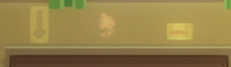
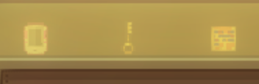
Estos seis son los objetos principales, que generalmente se obtienen como recompensa por completar los objetivos de misión para otros personajes.
Además de estos, hay disponibles otra categoría de artículos.
La alcancia de cerdito
Se trata de un objeto interactivo único que no se puede transportar físicamente al colegio. El jugador interactúa con él para controlar los fondos disponibles y asignar la cantidad de dinero que llevará durante la jornada escolar.
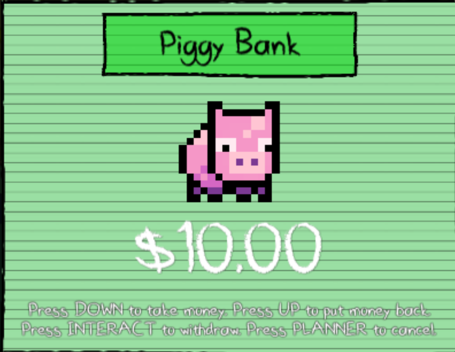
La alcancia es un mecanismo de almacenamiento. Tiene una capacidad máxima de $10.00.
El jugador puede adquirir moneda diariamente a través de varios medios: robo, recompensas ganadas o vendiendo artículos al personaje conocido como Monty (que se analiza más adelante).$10.00
Tras seleccionar los objetos en la habitación del jugador, este accede al entorno del jardín de infancia. Esta transición marca el inicio de la toma de decisiones estratégicas necesaria para el desarrollo del día.
No se permite la actividad sin restricciones. El tiempo disponible para actuar es limitado. El progreso se rige por "puntos de acción", representados visualmente por manzanas.
La mayoría de las acciones dentro del juego consumen estos puntos de acción, incluyendo conversaciones específicas con los personajes, el comercio (compra y venta) y las acciones agresivas hacia el Conserje.
Una vez establecidos estos requisitos previos, ¡comienza la experiencia de Kindergarten!
esta area sirve para conocer a la mayoria de personajes del juego
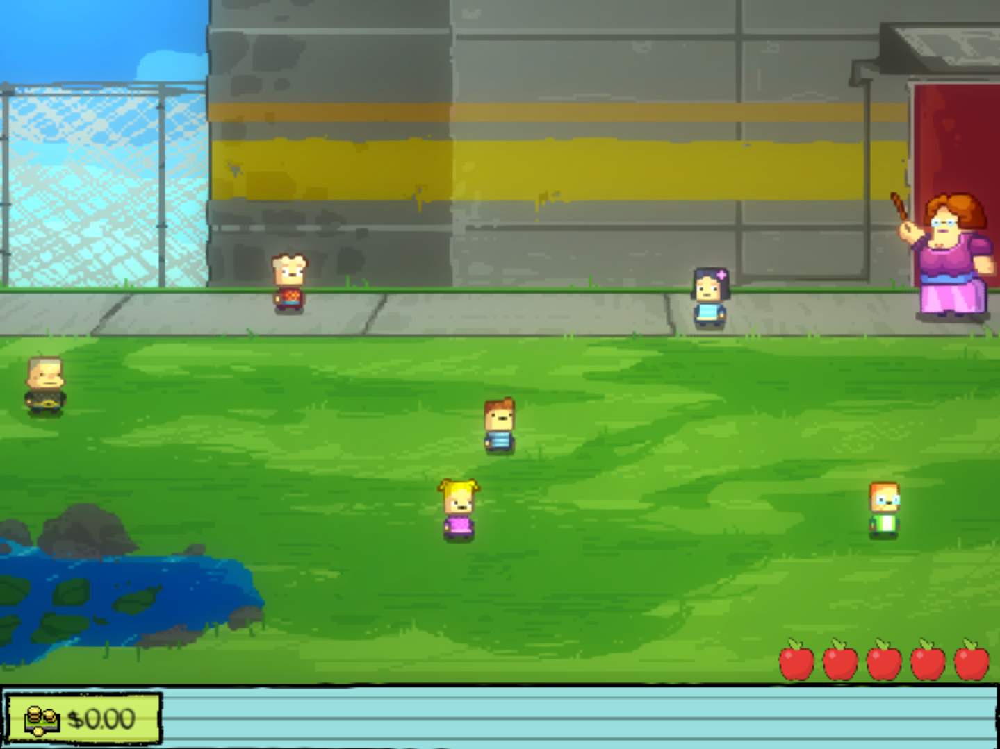
Uno de los primeros personajes que encontramos es:
Buggs representa la figura agresiva de la clase. Su comportamiento está influenciado por factores como su apariencia física, su aislamiento social y la ausencia de su padre.
El protocolo estandar del encuentro
Al llegar al jardín de infancia, evalúa el dinero del niño. Si el niño tiene más de 3 dólares, le confiscará el cincuenta por ciento; de lo contrario, la interacción terminará en una pelea.
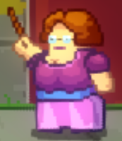
Ella es la instructora del aula. Su conducta profesional es muy cuestionable. Ha demostrado tener la capacidad de reaccionar de forma letal ante el estrés, podría solicitar la ayuda del jugador para expulsar a otros estudiantes (un aspecto que se tratará más adelante) y muestra signos de dependencia a sustancias.
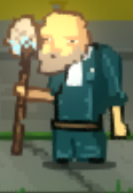
Es el encargado de mantenimiento de las instalaciones. Este puesto oculta una identidad mucho más siniestra: es un asesino de menores, veterano militar y tiene una orden de alejamiento vigente.
Interactuar con él en el baño puede tener dos desenlaces: un ataque letal contra el jugador o una negociación favorable con la cocinera para reducir el precio de una barra de chocolate a la hora del almuerzo de 10 dólares a menos de 1 dólar.
He is a conspicuously unusual student who refers to himself in the third person. He is emotionally distressed due to the disappearance of his single close friend. If the player initiates conversation regarding his missing friend, the interaction will lead to mandatory reporting to the Principal's office.
Una estudiante caracterizada por su comportamiento manipulador y hostil, fácilmente reconocible por su vestimenta rosa. Es la figura femenina dominante de la clase, mostrando rasgos egocéntricos y rencorosos. Si el jugador interactúa con ella, le pedirá que le ponga chicle en el pelo a Lily durante la clase. Si lo consigue, el jugador se convertirá en su pareja.
Es una estudiante introvertida que evita el contacto debido a la angustia que le ha provocado la desaparición de su hermano. Sospecha firmemente que el director está involucrado en el incidente, pero carece de pruebas concretas para respaldar su afirmación.
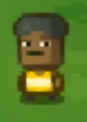
Es el estudiante influyente que dicta el estatus social basándose en evaluaciones superficiales. Su primer contacto con él se caracteriza por el rechazo, alegando que no es popular. Su estatus elevado se atribuye a ser el hijo del director y a haber robado un objeto importante de su despacho.
Opera como vendedor ambulante a pequeña escala, ofreciendo una amplia gama de mercancía, desde juguetes sencillos hasta sustancias ilícitas. Su inventario durante el segmento "Patio Escolar" incluye:
su inventario cambiacuando empiesa el almuerzo:
Durante el recreo, su inventario se limita a un solo artículo: una tarjeta coleccionable de Monstermon por 12,50 dólares.
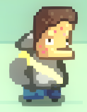
TSu función principal es la de hacer cumplir las normas escolares, lo que frecuentemente resulta en que el jugador sea enviado a la oficina del director. Es un joven adulto con actividades desconocidas fuera del horario escolar. Ofrecerle cigarrillos puede provocar una breve negligencia en el cumplimiento de su deber, perdonandote y no informar sobre el movimiento no autorizado del jugador.
el director de la escuela es el principal sospechoso de los sucesos extraños de la escuela. Aunque aparentemente convencional, existen indicios de irregularidades subyacentes..
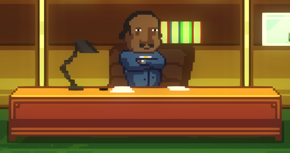
Las acusaciones de Lily pueden tener fundamento o ser una distracción. En cualquier caso, ser enviada a su oficina siempre es una consecuencia indeseable.El segmento de la mañana comienza una vez que se han agotado todos los puntos de acción. El jugador puede entonces explorar el aula e interactuar con los alumnos reunidos. Este periodo ofrece oportunidades para una mayor interacción con los personajes y la realización de tareas específicas.
Cuando termina la jornada matutina, comienza el almuerzo.
A la hora del almuerzo no hay mucho que hacer.
A la hora del almuerzo, lo mejor que puedes hacer es continuar con tus tareas o simplemente esperar.
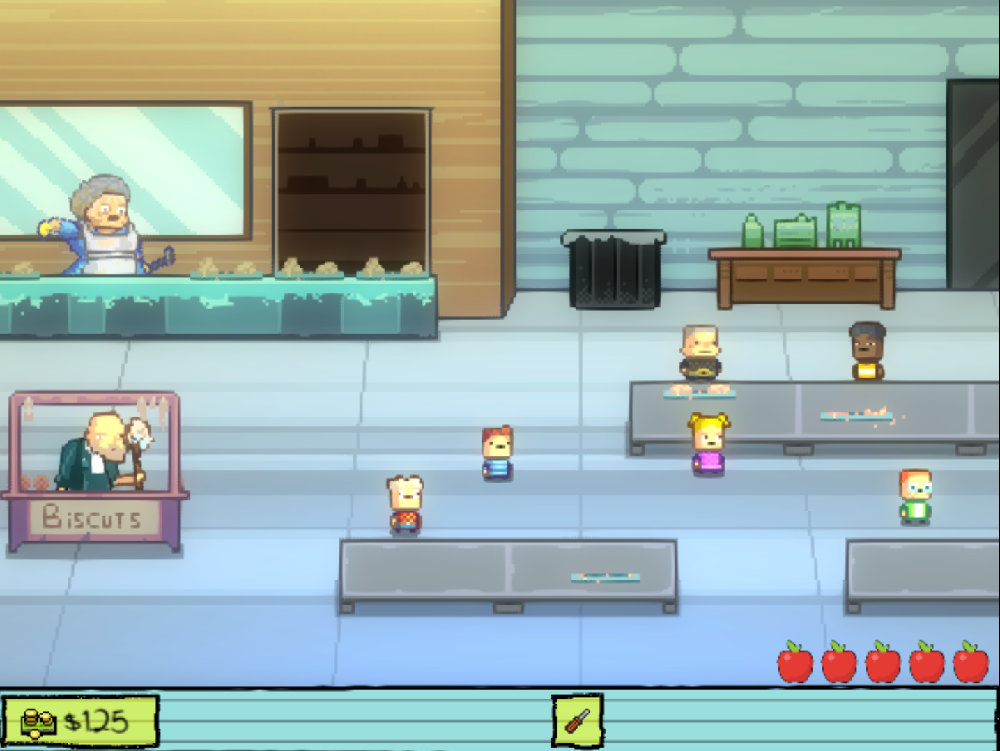
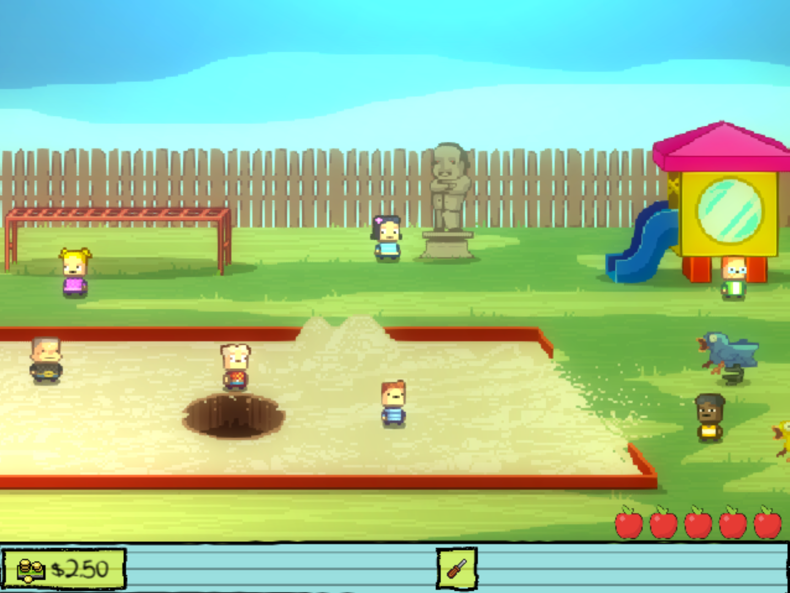
Después del almuerzo todos salen a jugar
Ya no hay nada más que hacer.
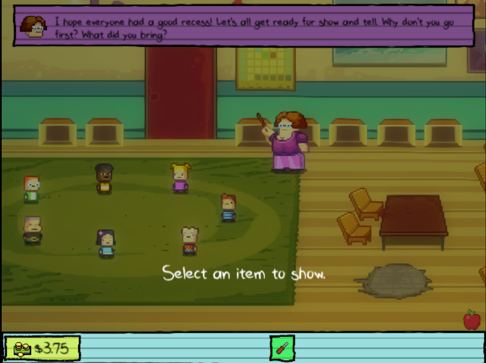
Por último, hoy debes traer al menos un objeto, pero algunos debes ocultárselos al profesor. Algunos de ellos son:
si muestras cualquiera de estos objetos seras "expulsado"
Todas las misiones pueden completarse de otras maneras
En Kindergarten, el progreso se basa en tareas interconectadas de los personajes. Al completar estas misiones (encomendadas por personajes como Nugget o la señorita Applegate), obtienes objetos o información permanentes. Estos objetos son las claves para desbloquear y completar las historias de otros personajes, formando un complejo rompecabezas interdependiente que conduce al final del juego.
Para comenzar la misión de Cindy, debes empezar el día siendo asaltado por Buggs (llevando más de 3 dólares).
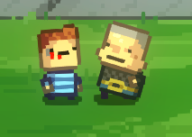
"en un caso nesesitaras extra un dólar"
Después de eso, deberías hacer que Buggs fuera expulsado hablando con la Sra. Applegates sobre el robo.
Después podrás hablar con Cindy y comenzar su misión.
Cindy te pedirá que le pongas una bola de chicle en el pelo a Lily DURANTE la mañana
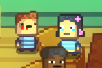
Cuando le cuentes a Cindy lo que pasó, ella se alegrará y te invitará a jugar a las casitas con ella, pero antes tendrás que ir al baño y limpiarte toda la sangre de la cara.
Ahora puedes ir a jugar con ella. Debes ser un buen marido o terminará la "relación".
Le gusta tener siempre la razón, así que no grites ni dejes de jugar.
Después de todos los juegos te encontrarás con ella en el almuerzo, donde te ordenará que te sirvas algo de comida y te sientes con ella (solo un poco de comida rápida de la señora del comedor, no te preocupes).
Entonces Cindy te pedirá que le consigas "comida vegana"; ella no sabe qué significa eso, así que puedes traerle cualquier cosa. exepto la comida de la cafeteria.
Para terminar el almuerzo, Cindy te dará la llave del armario del conserje y le pagará a la cocinera para que te deje salir. Necesita algo repugnante para humillar a Lily.
Después de salir de la zona de almuerzo, tienes que ir al armario del conserje y buscar algo asqueroso. Una vez que lo encuentres, debes salir antes de que regrese el conserje.
En el recreo, Cindy te contará el plan para humillar a Lily; luego tendrás que ponerte en una posición desde donde puedas verter la sangre sobre Lily.
Cuando lo hagas, el recreo terminará y Cindy te dará una flor para la actividad de "Mostrar y Contar". Si muestras la flor a la clase, la tarea terminará y podrás quedarte con la flor. Si no lo haces, sin haber expulsado a Buggs, te matará.
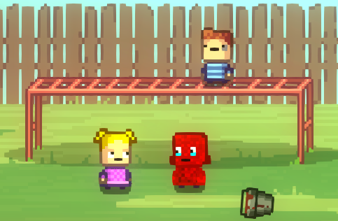
Serás recompensado con la flor de Cindy; puedes regalársela a alguien que necesite amor.
fin de la mision 1
debes llevar 3 dollares exactos
en el patio debes comprar 3 items
después de eso puedes simplemente esperar para gastar las manzanas que faltan./p>
Después de que el profesor termine de hablar, puedes ir a hablar con Jerome para comenzar su misión dándole el yo-yó y escuchando el plan.
Te dirá que el conserje le robó el láser y que quiere recuperarlo.
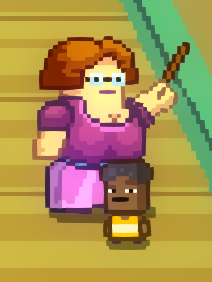
Debes salir cuando el profesor esté distraído, ir al armario del conserje y tomar el láser de Jerome.
Antes de que Jerome vaya a distraer al profesor, él te dará un pase de director para el vigilante del pasillo.
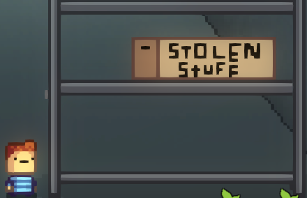
Entonces él hablará con la profesora, mientras tanto tú escapas al cuarto del conserje.
Una vez dentro, necesitarás el destornillador; úsalo para romper el estante donde se oculta el láser.
Después de eso, debes regresar al aula antes de que vuelva el conserje.
a la hora del almuerzo
Cuando llegues, Jerome te llamará para hablar sobre los próximos pasos.
Al mismo tiempo, el conserje verá el armario y comenzará a preguntar quién estaba dentro.
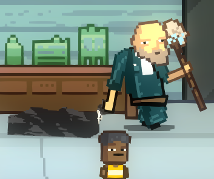
Debes esconder el láser en el cubo de basura lo más rápido posible antes de que el conserje entre en la zona de comedor.
Buscará el láser en tus bolsillos y, si no lo has escondido, te matará.
La señora del comedor le dirá que pare y saque la basura del cubo; el conserje la recogerá y la dejará en el baño.
Cuando el conserje regrese al comedor, Jerome le pagará a la cocinera para que no te impida irte.
Cuando salgas y vayas al baño, el prefecto te llevará a la oficina del director, a menos que le des un paquete de cigarrillos. Tomas el láser y vuelves al comedor y luego al recreo.
Cuando vayas al recreo, Monty te dirá que no hables con Jerome porque el conserje está demasiado cerca de él; Monty tomará el láser y te dará una bomba para que te encargues del conserje.
you place it behind the janitor and when you talk again with monty he will blew up the janitor and Show and tell will start
Muestra cualquier objeto que no te mate y el día terminará.
Recibirás como recompensa un molde para llave; si se lo das a Monty, él te hará una llave para la oficina del director.
fin de la mision 2
Debes comenzar el día siendo robado por Buggs (se recomienda llevar 5 dólares) y contárselo a la maestra.
Después de eso, la maestra te ofrecerá deshacerse de Buggs a cambio de una estrella dorada.
Aquí es donde comienza la misión.
Luego de esa interacción podrás iniciar una pelea en la que puedes llamar a la maestra para que envíe a Buggs a la oficina del director. Entonces la Srta. Applegate te dirá que puedes ganar más estrellas doradas eliminando a tus compañeros de clase.
Después de enviar a Buggs a la oficina del director, tu siguiente objetivo es Cindy. Para ella, debes comprar una grabadora de voz a Monty por 2.50 dólares. Luego habla con ella, acepta ser su novio pero rechaza ponerle chicle en el cabello a Lily. Eso hará que Cindy se enoje y grite que intentaste abusar de ella.
La Srta. Applegate los enviará a ambos a la oficina del director, lo que salvará a Buggs de morir, así que tendrás que buscar otra forma de acabar con él antes del recreo. El director preguntará qué ocurrió, y cuando Cindy termine de hablar, te preguntará tu versión. Puedes darle la grabadora de voz para librarte de los problemas, haciendo que Cindy sea “expulsada”.
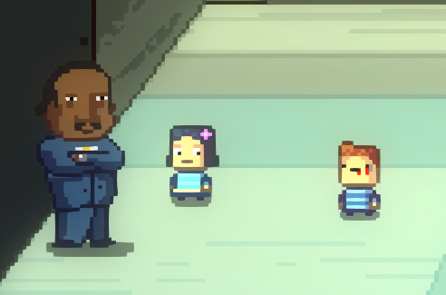
Cuando regreses a clase, la maestra pondrá a Jerome como el siguiente objetivo. Ella cree que robó un pase de su padre y quiere que se lo quites.
Necesitas hablar con Jerome y él te dirá que no eres lo suficientemente “cool” para hablar con él, así que díselo a la Srta. Applegate. Ella te dejará robar un objeto de los casilleros de tus compañeros. Debes buscar el casillero de Monty, tomar su dinero y comprar un yo-yo para Jerome.
Cuando le des el yo-yo a Jerome, él te entregará el pase y distraerá a la maestra, igual que en su misión. Debes hablar con la maestra y entregarle el pase robado. Con eso, Jerome será enviado a la oficina del director.
Antes de que termine la mañana, la Srta. Applegate te dirá que debes hacerte amigo de Nugget. Solo necesitas hablar con él antes del almuerzo y hacer lo que te pida.
En el almuerzo debes eliminar a Monty, Lily y Buggs, comenzando con la pequeña tarea de Nugget que matará a Buggs. Después, habla con Monty para escuchar que el conserje escribió “biscut” cuando quiso escribir “biscuit”, y cuéntaselo al conserje, quien matará a Monty y te dará sus gafas. Puedes dárselas a la señora del almuerzo para que te deje salir y así contarle al director que Lily lo está espiando tocando la puerta.
Después de eso estarás en el recreo, donde la maestra te preguntará si lograste hacerte amigo de Nugget, porque tiene un plan para meterlo en problemas.
Debes bajar a la cueva de Nugget y encontrar algo que cause problemas.
Luego puedes hablar con Nugget y bajar por el agujero en el arenero. Cuando estés allí puedes tomar el cadáver de un perro y dárselo a la maestra, quien accidentalmente lanzará a Nugget por el agujero, matándolo.
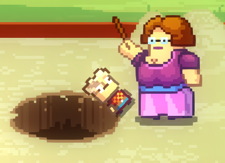
Eso sería lo último del día. La Srta. Applegate se irá temprano y te dará un pase de almuerzo.
Puedes usar el pase de almuerzo para comer con ella en el aula.
Fin de la misión 3.
Para comenzar esta misión necesitas llevar a la escuela el pase de almuerzo obtenido en la misión de la Srta. Applegate.
Debes llevar más de tres dólares y dejar que Buggs te robe, luego contárselo a la maestra pero negarte a iniciar una pelea. La Srta. Applegate se sentirá decepcionada y deseará que no te pase nada malo.
Después debes hablar con Nugget. Él estará triste por la pérdida de su amigo Billy; si sigues hablando de él, te enviará a la oficina del director.
Cuando llegues a la oficina del director debes decir que no estás triste por Billy y hacer acusaciones sobre el director. Después de eso, él te dará un pequeño dispositivo y te enviará de vuelta a clase.
Cuando regreses, Buggs te dirá que sabe lo que la maestra quiere hacer, y luego te contará su plan para matarla.
Después de eso te dará un cuchillo y te dirá que lo uses cuando la maestra se dé vuelta. Debes preguntar cómo hacer que se dé vuelta, y Buggs te enviará a hablar con Monty.
Cuando hables con Monty, él te pedirá algún dispositivo, por eso necesitabas ir a la oficina del director. Por 1.50 dólares, Monty fabricará una bomba con control remoto.
Luego debes hablar con Buggs y colocar la bomba frente a cualquier mesa delantera.
Después de eso debes hablar con Nugget y hacerte su amigo.
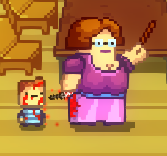
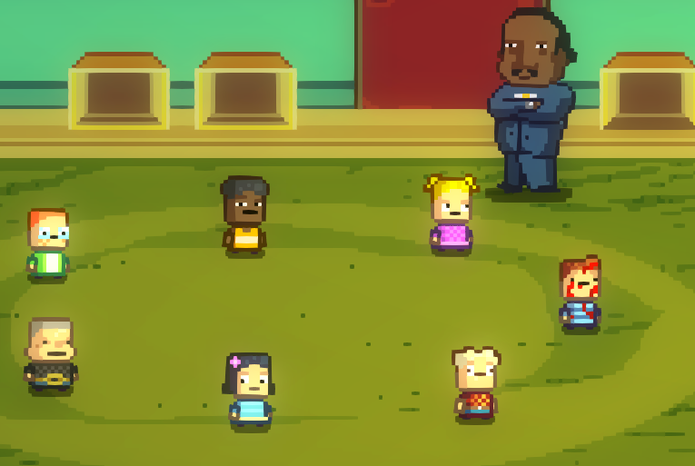
Luego puedes saltarte la siguiente manzana y comenzar la hora del almuerzo. Debes usar el pase de almuerzo para comer con la Srta. Applegate y utilizar el control de la bomba remota para distraerla y apuñalarla con el cuchillo.
Después de eso, Buggs irá al aula y te llevará al recreo. Cuando llegues, habla con Buggs, quien te pedirá que dejes el cuchillo ensangrentado en la cueva de Nugget. Nugget rechazará el cuchillo, pero como eres su amigo, te permitirá dejarlo allí.
Luego puedes saltarte las manzanas restantes y pasar a la actividad de “mostrar y contar”, donde el director te registrará buscando algo relacionado con la muerte de la maestra.
Después de todo eso el día terminará y obtendrás el teléfono de la maestra, con la única información de que podrás usarlo otro día.
Fin de la misión 4.
Solo necesitas llevar la flor de Cindy. Puedes llevar cualquier cantidad de dinero, pero al menos debes tener un dólar.
En el patio de la escuela debes ofrecerte a ser amigo de Nugget y ofrecerle la flor. Él te hablará sobre los cinco nuggets de la amistad que escondió por toda la escuela y te dará uno de ellos, además de un pequeño dispositivo sin decirte para qué sirve.
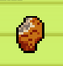
Después de hablar con Nugget debes ir a hablar con Cindy y aceptar el chicle, pero luego ir a contárselo a Lily y decirle que no es fea. Eso hará que ganes la confianza de Lily. Luego puedes ir a comprar un yo-yo a Monty. Finalmente puedes saltarte la última manzana.
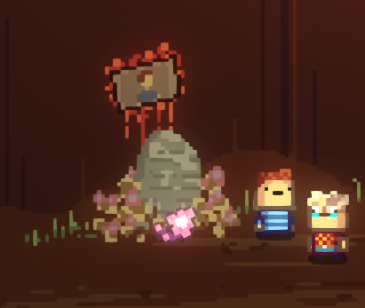
Durante la hora de la mañana, cuando hables con Nugget, él te dirá que en esta sala hay un nugget de la amistad, en uno de los casilleros. Debes distraer a la maestra dándole el yo-yo a Jerome pero sin salir del aula. Tomas el nugget, le das el pase a Jerome y vuelves a hablar con Nugget mostrándole el nugget. Después de eso te dará una carta de amor para que se la lleves a Lily. Ella se la dará a la maestra (porque no sabe leer) y la maestra leerá la carta frente a toda la clase.
Después de eso, Nugget te dará otro nugget y te pedirá que hables con él durante el almuerzo.
Cuando vuelvas a hablar con Nugget, Buggs le lanzará comida en la cara. Luego Nugget te dará un nugget envenenado y deberás hacer que Buggs se lo coma. Después te dirá que esperes hasta el recreo, pero antes puedes hablar con Lily, quien se disculpará por cómo te habló después de la carta y te dará una dona.
En el recreo, Nugget tomará el dispositivo y lo dejará a un lado para poder hablar sin ser escuchado. Quiere que hagas explotar la estatua del director con el dispositivo, por eso la colocó allí: explotará cuando escuche algo relacionado con Billy.
Colocas el dispositivo junto a la estatua y hablas con Lily sobre Billy; el dispositivo explotará y la maestra enviará a Lily a la oficina del director, pero si le das la dona no te enviará a ti.
Finalmente hablas con Nugget; él te dará el último nugget y te llevará a la cueva de Nugget, donde colocarás tu flor en el santuario de Billy. Luego Nugget te contará todo lo que recuerda sobre las pastillas, el director y Billy.
En la actividad de “mostrar y contar” muestras un Nugget, y después de la escuela Nugget te entregará una nota que le fue dada por Billy.
No tienes mucha información sobre ella, solo que a Lily le interesará.
Fin de la misión 5.
for this mission you need the key mold and all the mony you can carry (10 dollars)
after Buggs steal half of your money you tal to monty and give him the key mold, he want you to have 20 dollars to the ned of the day
there are a lot of strategys you can do other things this will be only one form
after talking with monty you will buy a yo-yo, then you talk to Nugget about Billy and he will send you to the principal office and if you say that you are sad the principal will give you some pills and send you back to class
then when you enter in the classroom the teacher will ask for a pill if you say no the teacher will give you a dollar, after that you give the yo-yo to jerome and get out of the classroom when the teacher is beeing distracted,
when you get ot go to the janitor closet and take the money from the left box then go to the bathroom and talk to the janitor about his judment and tell him that a penny doesnt buy a chocolate bar so the lunch lady will sell it to you at that price
at lunch you may buy the chocolate bar from the lunch lady, then sell everything you can to monty
then you can just skip recess and show the pills at show and tell
after everyone get out of kindergarten monty will ask for the mony if you have it you pay for the Principal's room key
you can use it to open the principal's room
end of mission 6
Para esta misión necesitas llevar a la escuela tres objetos: la nota de Billy obtenida en la misión de Nugget, el teléfono de la maestra de la misión de Buggs y la llave de la oficina del director de la misión de Monty, además de solo 3 dólares.
Debes ir a hablar con Lily sobre la nota de Billy, ir con Monty a leer la nota y luego mostrarle el teléfono y la llave de la oficina del director; entonces ella te contará el plan.
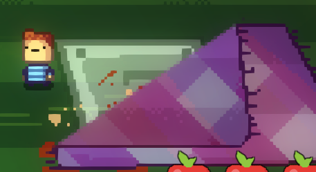
Necesitas lograr que te envíen solo a la oficina del director; puedes conseguirlo hablando con Nugget sobre Billy y buscando una puerta oculta bajo la alfombra.
Antes de hablar con Nugget necesitarás comprar cigarrillos a Monty; finalmente hablas con Nugget y te envían a la oficina del director, allí hablas con el director y buscas la puerta oculta.
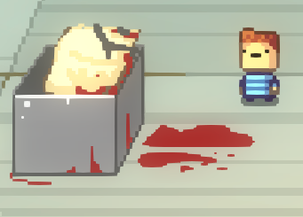
Después vas y hablas con Lily; ella dirá que necesitas encontrar algo sospechoso. Puedes ir al baño y hacer que el conserje limpie el último cubículo; cuando salga buscas en la bolsa ensangrentada y tomas un dedo ensangrentado.
Luego irás al almuerzo; después de hablar con Monty para tomar la nota, él te dirá que es un código para algo en la oficina del director. Entonces hablas con Lily y los dos van al baño; si no compraste los cigarrillos, el prefecto del pasillo (hall monitor) los enviará a los dos a la oficina del director y morirán, pero si le das los cigarrillos no lo hará. Después, con el teléfono, Lily hará que el director salga, dándote la oportunidad de entrar a la oficina del director y...
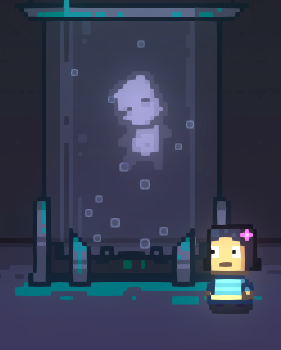
Lily buscará bajo la alfombra, pero la puerta necesitará una llave, no un código. Al mirar detrás del escritorio del director encontrarás un lugar para introducir el código; al usarlo tomarás la llave de la puerta y con ella entrarás a un laboratorio secreto.
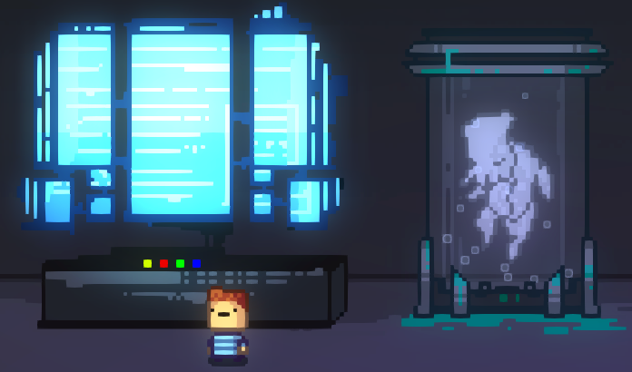
En el laboratorio encontrarás criaturas extrañas y a Billy; al llegar a la computadora verás 4 botones:
Debes pulsar esta combinación de botones en el mismo orden: el amarillo, luego el rojo, el amarillo de nuevo y luego el verde.
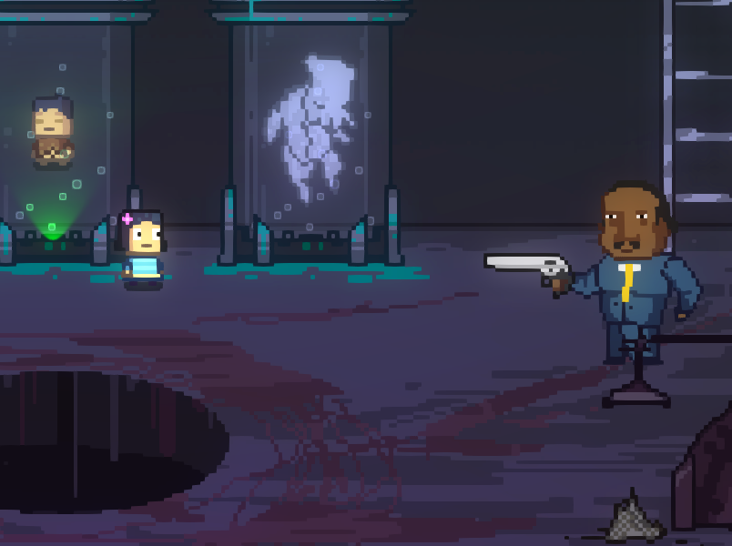
Tras pulsar el botón verde las luces se apagarán por un segundo. Cuando vuelvan, el director te apuntará con un arma; (si quieres) puedes hablar con él sobre por qué hizo todas esas cosas ilegales. Después debes pulsar el botón azul para liberar a Billy y al monstruo, que matarán al director.
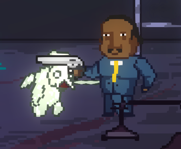
Después de eso vas a mostrar y contar, pero la maestra enviará a Lily a la oficina del director por haberse saltado el recreo; Lily le dirá que el director está muerto, por lo que la maestra abandonará la escuela porque nadie la pagará.
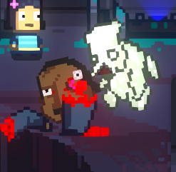
Después de eso Lily y Billy te darán una carta única de Monstermon y una guía para conseguirlas todas.
En la cueva de Nugget, durante su misión, hay un cartel que habla sobre los 25 talismanes.
Estas son las formas de obtenerlos todos:
Al hacer todo esto obtendrás el conjunto completo de cartas Monstermon.
Puedes llevar el set completo de cartas cuando hagas la misión de Nugget, pero en lugar de dejar la flor, colocas el nuevo objeto en el cartel de la derecha.
Eso iniciará el segundo final, donde Nugget mata a todos en la escuela excepto a su amigo (tú y Billy).
Luego te pedirá que vayas a casa, romperá la cuarta pared y te agradecerá por jugar *Kindergarten*, mencionando una posible *Kindergarten 2*.